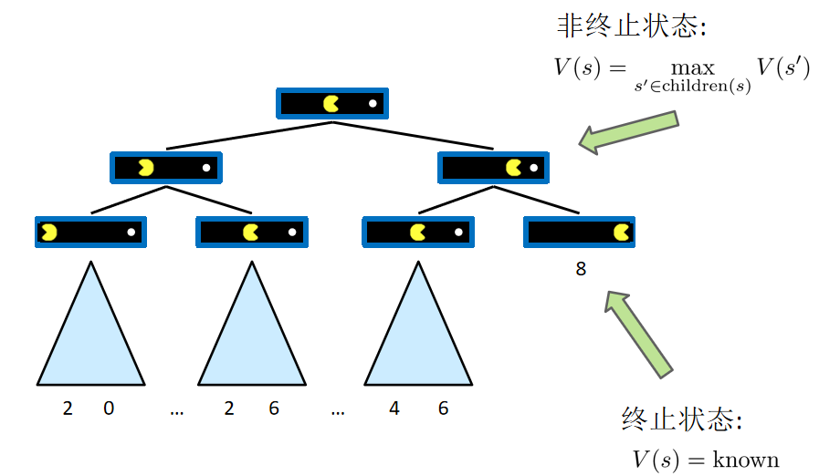
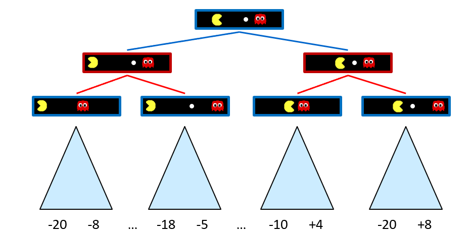
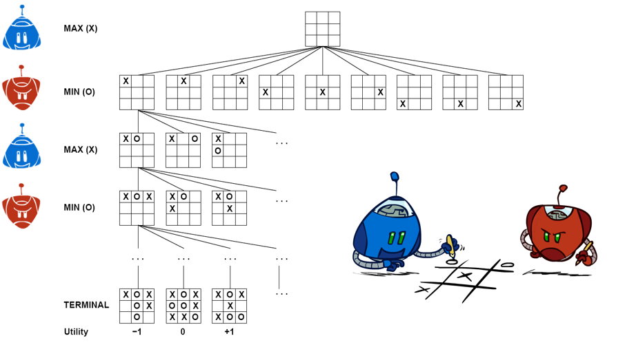
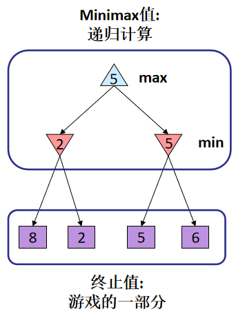
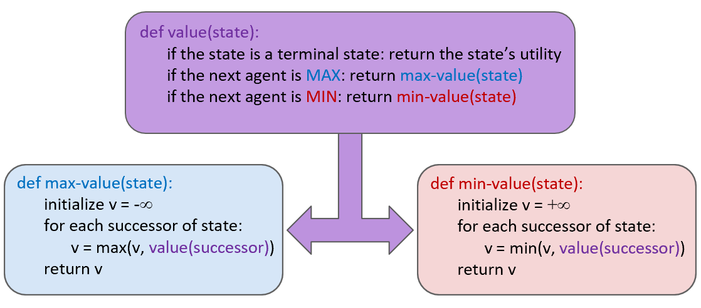
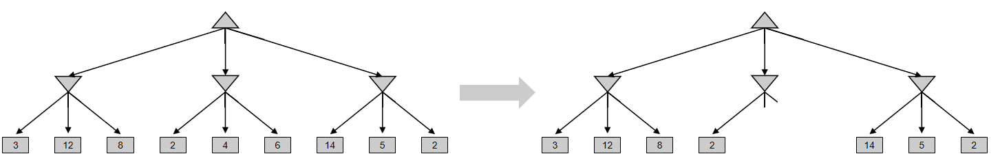
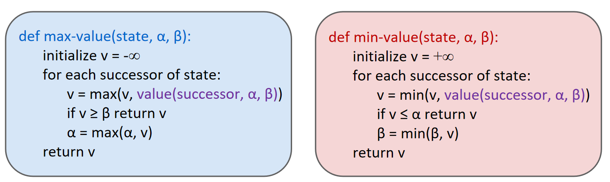

博弈理论中有许多种类型的博弈，其中包括但不限于：
这些是博弈理论中常见的一些类型。每种类型都有其独特的特征和规则。
Many possible formalizations, one is:
策略就是一个博弈者的解决方法: S→A
单智能体树是指在博弈中，单个智能体（玩家）考虑其自身行动选择的情况下所形成的搜索树。在单智能体树中，智能体只需考虑自己的最佳行动，而不需要考虑对手的行动选择。 这种单智能体树通常用于博弈中的训练、规划或决策过程，以帮助智能体在面对不同情况时选择最佳的行动策略。与对抗搜索中考虑对手行动选择的博弈树不同，单智能体树仅考虑智能体自身行动的影响，是一种简化的博弈模型。
状态值指的是每个状态节点在智能体考虑其自身行动选择时的评估值。这些状态值通常代表着在该状态下智能体能够达到的预期效用或收益。智能体在单智能体树中会根据这些状态值来评估每个状态节点的优劣，从而做出最佳的决策。

在对抗博弈树中，每个节点代表一个可能的游戏状态，而每个边则代表玩家的一个行动选择。这种树结构允许玩家在不同的决策点上考虑各种可能的行动，并根据对手可能的反应来制定策略。

通过在水平、垂直或对角线上连成一排相同标记来获得博弈的胜利吧！
井字棋博弈树

MiniMax表示最小化(Min)对手可能的最大收益，同时最大化(Max)自己可能的最大收益。Minimax是对抗搜索中常用的一种算法，用于确定博弈树中每个节点的最佳行动选择。在Minimax算法中，玩家会假设对手会采取最有利于对手的行动，并选择对自己最有利的行动，以最大化自己的收益或最小化可能的损失。
极小化极大搜索(Minimax search)


在资源有限的情况下，可以考虑使用Alpha-Beta剪枝算法来优化Minimax算法的性能。Alpha-Beta剪枝算法可以帮助减少搜索空间，从而提高搜索效率，特别是在资源有限的情况下。


试试使用python编写代码：
在实际博弈中，由于搜索空间庞大，Alpha-Beta剪枝算法无法一直搜索到叶子节点，通常需要设置搜索深度限制(depth-limited)来解决这个问题。
Alpha-Beta剪枝算法中设置搜索深度限制的步骤：
对于一个不错的国际象棋程序来说，假设我们有100秒的时间，每秒可以探索10K个节点，所以每次移动可以检查1M个节点，即达到大约depth=8。
在一个设置了最大搜索深度限制的情况下，评估函数扮演着非常重要的角色。评估函数用于在达到最大搜索深度时对当前局面进行评估，给出一个估值作为计算机做出决策的依据。
评估函数总是不完美的。随着搜索深度的增加，评估函数的质量会变得次要，因为搜索深度决定了计算机在博弈树中所能触及的局面信息的丰富程度。当搜索深度足够深时，即使评估函数不够完美，计算机也有可能找到更优的解决方案。
在权衡特征复杂性和计算复杂性时，需要谨慎考虑。增加特征的复杂性可能会提高评估函数的准确性，但也会增加计算量和复杂度。在实际应用中，需要根据实际情况和资源限制来平衡特征的复杂性和计算的效率，以找到一个合适的折衷方案。
Lookahead深度为2的Pacman
Lookahead深度为10的Pacman